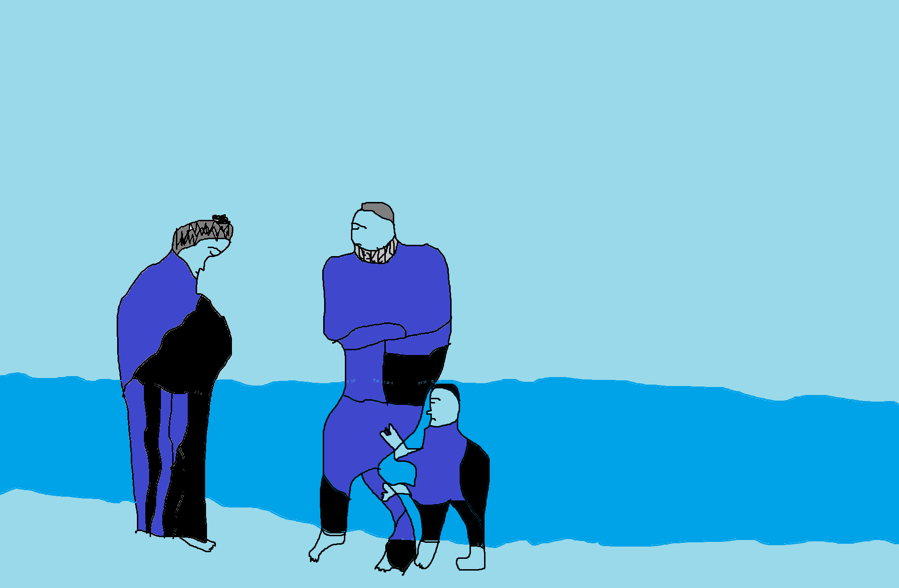

Minu valitud kunstnik on Pablo Picasso kes on üks kuulsamaid ja mõjukamaid kunstnikke maailmas.
Ta sündis 25. oktoobril 1881 Malagas, Hispaanias ja suri 8. aprillil 1973 Mougins'is, Prantsusmaal.
Picasso oli modernistliku kunsti juhtfiguur ja teda peetakse üheks 20. sajandi suurimaks kunstnikuks.
Tuntumad teosed:
1. "Guernica" - See on üks Picasso kõige kuulsamaid ja võimsamaid maale, loodud vastusena Guernica linna pommitamisele Hispaania kodusõjas. See suur maal, täis emotsionaalset ja poliitilist sümboolikat, on näide Picasso sügavast murest vägivalla ja sõja pärast.
 2. "Les Demoiselles d'Avignon" - See 1907. aastal maalitud teos on tihti peetud modernistliku kunsti alguseks. Maal kujutab viit naist bordellis ja murrab radikaalselt traditsioonilise perspektiivi ja vormi, viies kunsti kubismi suunas.
2. "Les Demoiselles d'Avignon" - See 1907. aastal maalitud teos on tihti peetud modernistliku kunsti alguseks. Maal kujutab viit naist bordellis ja murrab radikaalselt traditsioonilise perspektiivi ja vormi, viies kunsti kubismi suunas.
 3. "Sinine periood" - Picasso teosed 1901-1904 (Sinine periood) on olulised etapid tema loomingus, kus ta kasutas piiratud värvipaletti, et väljendada sügavaid emotsioone ja sotsiaalseid teemasid. All on üks maal ajast "Sinine periood".
3. "Sinine periood" - Picasso teosed 1901-1904 (Sinine periood) on olulised etapid tema loomingus, kus ta kasutas piiratud värvipaletti, et väljendada sügavaid emotsioone ja sotsiaalseid teemasid. All on üks maal ajast "Sinine periood".
 Mina arvan et Pablo Picasso on üks erilise andega kunstnik kes on väga hästi enda annet ära kasutanud.
Mina arvan et Pablo Picasso on üks erilise andega kunstnik kes on väga hästi enda annet ära kasutanud.
Minu proov järgi teha:
